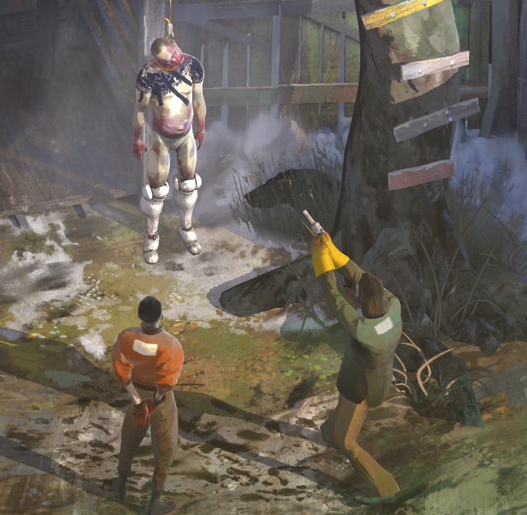

One of my favorite games of all time.
Disco Elysium is a point and click style adventure game where you play as a disheveled detective trying to solve a murder and other goings on in a rundown city.

The gameplay is relatively simple, it envolves exploring the map, talking to characters, passing skill checks, finding items, etc. There is no combat or anything like that. The game excels with its narrative and dialogue.
It is one of the few games to make me laugh out loud over and over again. The game mixes well silliness, seriousness, interest in the case and lore.
I found myself quite connected to and interested in the characters and situations and wanting them to succeed. When I finally completed the game I felt a little sad to be leaving them behind.
I would highly recomend this game to anyone with a sense of humour. It's a shame we can't expect a sequel as the publishers / developers of the game have had massive bust ups.